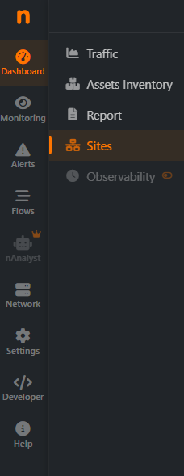
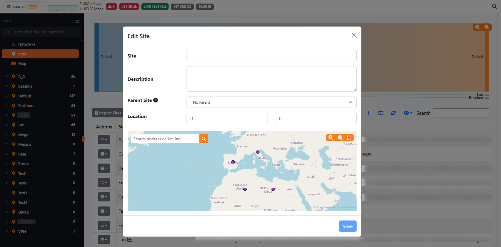
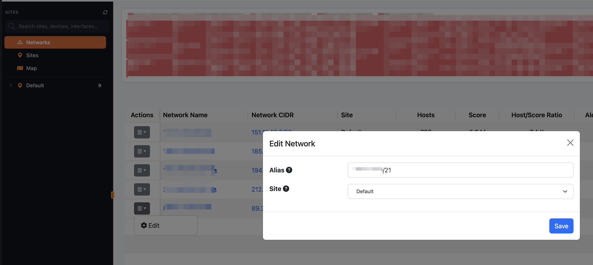
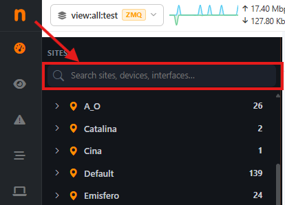
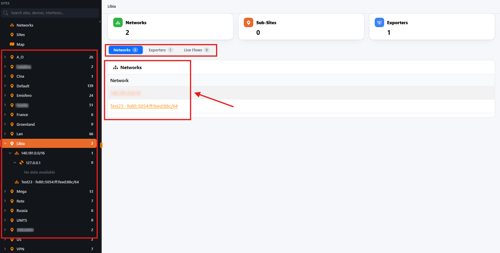
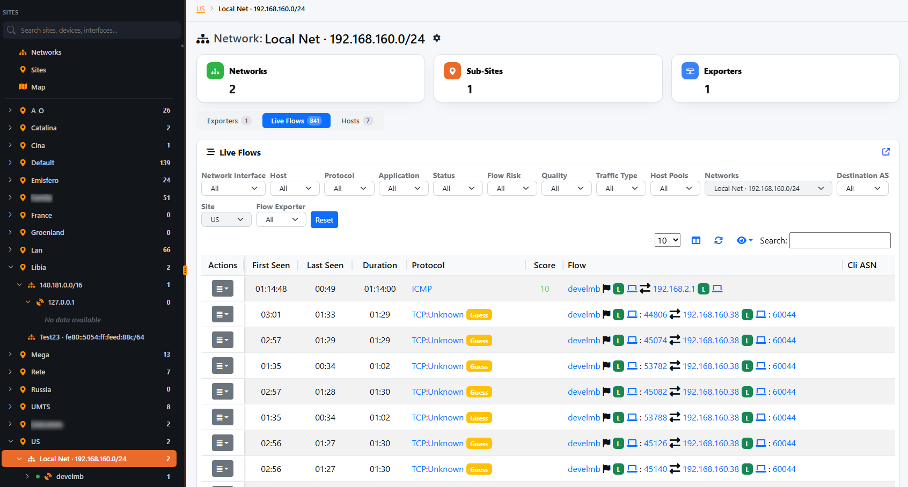
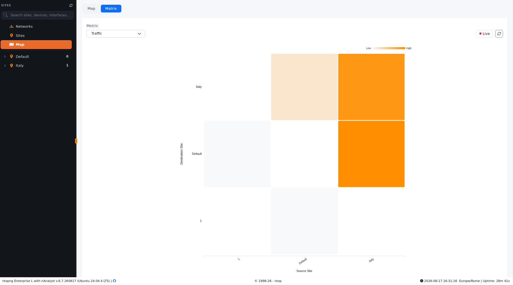

Сайты
А Сайт это именованное место. Обычно это физическое место, например офис, филиал, или дата-центр – к которому можно приписать одну или несколько сетей. Сайты позволяют вам группировать сети по местоположению, чтобы можно было просматривать хосты, трафик, оценку и оповещения месте, а не в отдельной сети. При желании сайт можно закрепить на карте с помощью его географические координаты.
Примечание
Сайты доступны с лицензией Enterprise M (или выше).

Страница Сайтов
Сайты управляются из Сайты с информационными панелями страница. Чтобы получить доступ к этой странице, нажмите на Панель управления и вкладка Сайты должно быть доступно

Вкладка «Сайты панели мониторинга»
По каждому сайту отображается следующая информация:
Сайт: отображаемое имя сайта.
Родительский сайт: отображаемое имя родительского сайта, если оно настроено.
Описание: необязательное текстовое описание.
Сети: сети, назначенные на данный момент сайту.
Расположение: координаты места (широта и долгота). Местоположение показано только когда координаты заданы.
Сайт по умолчанию
Предопределенный По умолчанию site всегда присутствует и не может быть удален. Каждая сеть который не был явно назначен сайту, принадлежит сайту по умолчанию, поэтому действует как запасной вариант. Поскольку сайт по умолчанию является зарезервированным, его нельзя редактировать или удалять. его действия отключены в таблице.
Добавление сайта
Из Сайты вкладку, нажмите кнопку + кнопка вверху таблицы, чтобы открыть создание форму, затем заполните следующие поля:
Сайт (обязательно): от 2 до 32 символов. Разрешены только буквы, цифры и пробелы (допускаются буквы с ударением). Имя должно быть уникальным: два сайта не могут иметь одно и то же имя.
Описание (необязательно): до 256 символов.
Родительский сайт (необязательно): введите другой уже настроенный сайт, чтобы создать иерархию между сайтами.
Расположение (необязательно): установите положение, набрав Широта и Долгота значения или щелкнув непосредственно на карте под полями. Маркер карты и координата поля остаются синхронизированными, поэтому щелчок обновляет значения, а ввод обновляет маркер. Широта должна быть между -90 и 90, долгота между -180 и 180.

Форма создания/редактирования сайта
Примечание
Поиск над географической картой можно использовать для поиска страны, города или адреса.
Нажмите Сохранять для создания сайта. Если значение недопустимо (например, повторяющееся имя), форма сообщает об ошибке и сайт не сохраняется.
Редактирование сайта
В Сайты вкладку, используйте действие редактирования в строке сайта, чтобы повторно открыть ту же форму с текущей значения предварительно заполнены. Обновите поля по мере необходимости и нажмите Сохранять. Сайт по умолчанию зарезервирован и не подлежит редактированию.
Удаление сайта
Используйте действие удаления в строке сайта и подтвердите удаление сайта. Сайт по умолчанию зарезервирован и не могут быть удалены.
Примечание
Удаление сайта не предотвращает его удаление, если ему все еще назначены сети. Любая сеть который был назначен удаленному сайту, возвращается к сайту по умолчанию.
Назначение сети сайту
Сети не назначаются сайту из формы сайта. Вместо этого назначение выполняется из Сети вкладка: отредактируйте сеть и выберите нужный сайт из списка. Сайт столбец в список сетей показывает сайт, которому в данный момент принадлежит каждая сеть. Сети, оставшиеся неназначенными, остаются часть сайта по умолчанию.

Добавление экспортера на сайт
Экспортеры потока (зонды NetFlow/sFlow/IPFIX, коллекторы nProbe) не привязаны к сайту напрямую: экспортер принадлежит сайту сети, частью которой он является. По умолчанию каждый экспортер и его сеть принадлежит сайту по умолчанию. Чтобы переместить экспортера на другой сайт:
Начните ntopng с файла со списком контролируемых сетей, используя команду
-mвариант (например-m networks.txt). Сеть, к которой принадлежит экспортер, должна быть в этом списке. в противном случае он недоступен в Сети вкладка.Если целевой сайт еще не существует, создайте его: откройте Сайты вкладка Сайты с информационными панелями страницу и нажмите кнопку + кнопка (см. Добавление сайта).

Создание нового сайта кнопкой +
Откройте Сети вкладку, нажмите кнопку Действия кнопка сети, частью которой является экспортер и выберите Редактировать.
В Сайт поле выберите нужный сайт и нажмите Сохранять.

Изменение сайта сети
Экспортер теперь указан на новом сайте вместе со своей сетью. Все остальные экспортеры той же сети также перемещаются.
Навигация по сайтам
После создания сайта он будет отображаться на левой панели навигации.
Возможен поиск по сайтам, устройствам и т. д. введя название Актива для поиска в строку поиска

Вся отображаемая информация доступна для поиска как по оперативным данным, так и по историческим данным.

Оттуда можно детально отобразить данные каждого сайта:
Потоки (если есть);
Экспортеры (при наличии);
Сети;

Также можно детализировать каждую отображаемую информацию. Если они доступны, Сети и Экспортеры будут отображаться на Сайте, а также по ним можно будет перемещаться со своей собственной статистикой и данными.
Для сетей будут отображаться:
Экспортеры (если есть)
Потоки
Хозяева

Графики сайтов
История трафика сайта (входящий, исходящий и внутренний трафик) отображается на его странице диаграммы. Откройте его с помощью значка диаграммы сайта в Сайты списке или с помощью значка открытия Временной ряд трафика карту, пока выбран сайт. В заголовке страницы указан путь Сайты / <имя сайта>: нажмите Сайты чтобы вернуться на панель управления. Как и на других страницах диаграмм, вы можно изменить временной диапазон, метрику и макет диаграммы.
Изучение экспортера
Щелчок по Flow Exporter (NetFlow/sFlow/IPFIX зонда) внутри сети открывает его подробный вид с навигационная цепочка (Сайт > Сеть > Экспортер) вверху и карточки заголовков для количества интерфейсов, текущего Трафик (отправленный/полученный), потоки, активные хосты и статус опроса SNMP. Представление экспортера имеет четыре подвкладки:
- Анализ трафика
Подвкладка по умолчанию: диаграмма временных рядов трафика (отправленные/полученные байты с течением времени), Таблица приложений (имя протокола, объем трафика и процентная доля) и Top Local Hosts/ Таблицы лучших удаленных хостов. Каждая строка таблицы ссылается на страницу «Потоки», предварительно отфильтрованную по этому приложение или хост.
- Интерфейсы
Перечисляет каждый физический/логический интерфейс, предоставленный экспортером, с указанием полученных байтов и байтов. Отправленные колонки. Щелчок по интерфейсу сужает диаграммы трафика до этого единственного интерфейса.
- Живые потоки
Таблица потоков реального времени для трафика, видимого этим экспортером: хост-источник/назначение, приложение. протокол, протокол L4, порты, VLAN, пропускная способность и продолжительность, с той же панелью фильтров (протокол, статус, QoE, тип трафика, пул хостов, ASN, индекс входящего/исходящего интерфейса), используемый в автономных потоках. страница.

- Хозяева
Таблица хостов для этого экспортера: каждый локальный/удаленный хост, который генерирует через него трафик, с объемом трафика, страной/ASN и обычным набором столбцов таблицы хостов (с возможностью сортировки, поиска, с контроль видимости столбцов).

- SNMP
Это не дополнительная вкладка самого экспортера: карточка состояния SNMP в заголовке показывает Опрос или Не Опрос. Если экспортер также настроен как опрашиваемое устройство SNMP, SNMP Устройства вход появляется как родственный узел под ним в дереве левой боковой панели — см. ниже.
Исследование устройства SNMP
Наконец, также доступны устройства SNMP (только если они опрашиваются ntopng с помощью SNMP). Расширение SNMP Устройства в дереве боковой панели перечислены все опрашиваемые устройства по имени; выбор одного открывает его подробную информацию просмотреть с помощью:
SNMP Интерфейсы количество заголовков.
А Временной ряд трафика диаграмма с одной выбираемой линией для каждого интерфейса SNMP (физический порт, виртуальный интерфейс, мост и т. д.).
А Информация об устройстве карта: Имя устройства, IP-адрес устройства, Описание (из системы устройства). описание OID), местоположение, контакт, время работы, время с момента последнего опроса, количество интерфейсов SNMP и Интерфейсы с ошибками учитываются.
Ан SNMP Интерфейсы таблица, одна строка для каждого опрашиваемого порта/интерфейса, со столбцами для имени, Псевдоним интерфейса, IP-адреса интерфейса, роль, входные/исходящие байты, пропускная способность, VLAN, администратор. Статус, Опер. Статус, статус дуплекса, MAC-адреса, отброшенные входы, ошибки входа/выхода, скорость восходящего/нисходящего канала, последний вход/выход Использование и последнее изменение. Щелчок по строке открывает собственную страницу сведений об этом интерфейсе SNMP.

Представления карты и матрицы
Помимо Сети и Сайты вкладок, панель управления Сайтами предлагает Карта вкладка с двумя подпредставления для географического и межсайтового взгляда на трафик:
Карта: отображает каждый сайт с настроенными координатами на базовом слое OpenStreetMap. А Метрика Селектор управляет тем, что представляет каждый маркер сайта (по умолчанию — «Трафик»), а Переключатели в реальном времени/истории между текущими и временными данными. Маркеры можно искать по адрес или набрав координаты напрямую.

Матрица: матрица трафика между сайтами, где строки и столбцы представляют собой сайты, а в каждой ячейке показаны трафик, которым обмениваются между этой парой сайтов – полезно для определения того, какие сайты взаимодействуют больше всего друг с другом.
